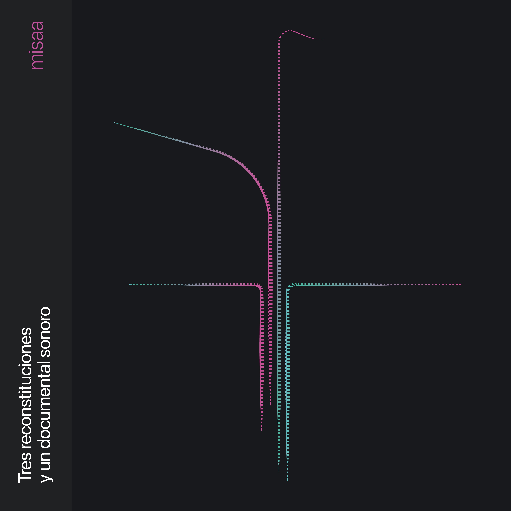
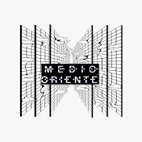

June, 2021


Listen/Details on Sello Medio OrienteProduced by misaa
Published through Sello Medio Oriente
Artwork and Design by Bárbara Molina
1st edition on Cassette – 15 copies
All soundscapes recorded by misaa, except:
Press voiceovers, extracted from social media
Thanks to Rainer Krause and the Sound Art course of the Master's in Media Arts
three reconstitutions
ira, baq, mon — In the 1990s, a period of transition, Santiago's metro and its newly inaugurated Line 5 were symbols of progress and development for the city. Among my memories of riding it during those years with my mother, I remember hearing a soft ambient music reverberating through the empty, wide stations. She told me it was used to calm people, to make the use of public transport pleasant, and even to encourage us to take care of and keep the place clean. I don't know when this music stopped being played, but since 2006 and the Transantiago, the system was forced to receive many more people, and over time it became a hostile and harassing place for those of us who had to use it during peak hours. Part of this album is a sonic reconstitution exercise of that period — not necessarily nostalgic, but as an acoustic reflection of the transport devices modulated by the power of the time.
sound documentary
revuelta — While recording the soundscapes, secondary school students began acts of protest, jumping the turnstiles at metro stations and calling on others to do the same, chanting "evade, don't pay." The government responded with repression, triggering a social uprising that led to the rethinking of the country's Constitution, our micro-political relations, and the purpose of this album. The documentary exercise consists of sonic excerpts from acts of protest at stations across three listening situations: the cacerolazos (pot-banging), the press, and the evacuation of the stations.
ira, baq, mon — Soundscapes recorded between September and October 2019, at the Irarrázaval, Baquedano and Moneda stations, respectively. Ambient music composed during 2020.
revuelta — Recordings from October 18, 2019 to March 2020.